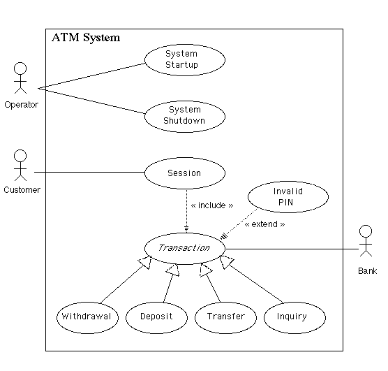

The system is started up when the operator turns the operator switch to the "on" position. The operator will be asked to enter the amount of money currently in the cash dispenser, and a connection to the bank will be established. Then the servicing of customers can begin.
The system is shut down when the operator makes sure that no customer is using the machine, and then turns the operator switch to the "off" position. The connection to the bank will be shut down. Then the operator is free to remove deposited envelopes, replenish cash and paper, etc.
A session is started when a customer inserts an ATM card into the card reader slot of the machine. The ATM pulls the card into the machine and reads it. (If the reader cannot read the card due to improper insertion or a damaged stripe, the card is ejected, an error screen is displayed, and the session is aborted.) The customer is asked to enter his/her PIN, and is then allowed to perform one or more transactions, choosing from a menu of possible types of transaction in each case. After each transaction, the customer is asked whether he/she would like to perform another. When the customer is through performing transactions, the card is ejected from the machine and the session ends. If a transaction is aborted due to too many invalid PIN entries, the session is also aborted, with the card being retained in the machine.
The customer may abort the session by pressing the Cancel key when entering a PIN or choosing a transaction type.
Note: Transaction is an abstract generalization. Each specific concrete type of transaction implements certain operations in the appropriate way. The flow of events given here describes the behavior common to all types of transaction. The flows of events for the individual types of transaction (withdrawal, deposit, transfer, inquiry) give the features that are specific to that type of transaction.
A transaction use case is started within a session when the customer chooses a transaction type from a menu of options. The customer will be asked to furnish appropriate details (e.g. account(s) involved, amount). The transaction will then be sent to the bank, along with information from the customer's card and the PIN the customer entered.
If the bank approves the transaction, any steps needed to complete the transaction (e.g. dispensing cash or accepting an envelope) will be performed, and then a receipt will be printed. Then the customer will be asked whether he/she wishes to do another transaction.
If the bank reports that the customer's PIN is invalid, the Invalid PIN extension will be performed and then an attempt will be made to continue the transaction. If the customer's card is retained due to too many invalid PINs, the transaction will be aborted, and the customer will not be offered the option of doing another.
If a transaction is cancelled by the customer, or fails for any reason other than repeated entries of an invalid PIN, a screen will be displayed informing the customer of the reason for the failure of the transaction, and then the customer will be offered the opportunity to do another.
The customer may cancel a transaction by pressing the Cancel key as described for each individual type of transaction below.
All messages to the bank and responses back are recorded in the ATM's log.
A withdrawal transaction asks the customer to choose a type of account to withdraw from (e.g. checking) from a menu of possible accounts, and to choose a dollar amount from a menu of possible amounts. The system verifies that it has sufficient money on hand to satisfy the request before sending the transaction to the bank. (If not, the customer is informed and asked to enter a different amount.) If the transaction is approved by the bank, the appropriate amount of cash is dispensed by the machine before it issues a receipt. (The dispensing of cash is also recorded in the ATM's log.)
A withdrawal transaction can be cancelled by the customer pressing the Cancel key any time prior to choosing the dollar amount.
A deposit transaction asks the customer to choose a type of account to deposit to (e.g. checking) from a menu of possible accounts, and to type in a dollar amount on the keyboard. The transaction is initially sent to the bank to verify that the ATM can accept a deposit from this customer to this account. If the transaction is approved, the machine accepts an envelope from the customer containing cash and/or checks before it issues a receipt. Once the envelope has been received, a second message is sent to the bank, to confirm that the bank can credit the customer's account - contingent on manual verification of the deposit envelope contents by an operator later. (The receipt of an envelope is also recorded in the ATM's log.)
A deposit transaction can be cancelled by the customer pressing the Cancel key any time prior to inserting the envelope containing the deposit. The transaction is automatically cancelled if the customer fails to insert the envelope containing the deposit within a reasonable period of time after being asked to do so.
A transfer transaction asks the customer to choose a type of account to transfer from (e.g. checking) from a menu of possible accounts, to choose a different account to transfer to, and to type in a dollar amount on the keyboard. No further action is required once the transaction is approved by the bank before printing the receipt.
A transfer transaction can be cancelled by the customer pressing the Cancel key any time prior to entering a dollar amount.
An inquiry transaction asks the customer to choose a type of account to inquire about from a menu of possible accounts. No further action is required once the transaction is approved by the bank before printing the receipt.
An inquiry transaction can be cancelled by the customer pressing the Cancel key any time prior to choosing the account to inquire about.
An invalid PIN extension is started from within a transaction when the bank reports that the customer's transaction is disapproved due to an invalid PIN. The customer is required to re-enter the PIN and the original request is sent to the bank again. If the bank now approves the transaction, or disapproves it for some other reason, the original use case is continued; otherwise the process of re-entering the PIN is repeated. Once the PIN is successfully re-entered, it is used for both the current transaction and all subsequent transactions in the session. If the customer fails three times to enter the correct PIN, the card is permanently retained, a screen is displayed informing the customer of this and suggesting he/she contact the bank, and the entire customer session is aborted.
If the customer presses Cancel instead of re-entering a PIN, the original transaction is cancelled.
Page of links for non frames-enabled browsers.